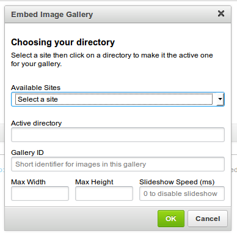
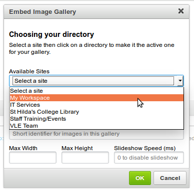
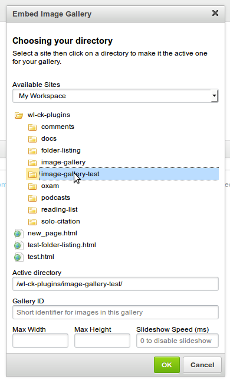
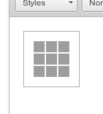

This plugin allows you to embed an image gallery for a specified folder in Resources that contains images.
The titles and descriptions for each image are automatically pulled from Weblearn.
Click on the Image Gallery icon.
A dialog will appear with a dropdown allowing you to select from the sites available to you.

Select the desired site and its Resources folder will be shown.
Navigate through the folders by clicking on them to expand their contents until you find the folder that you wish to embed.

You are given several options for configuring the gallery:
Click OK to embed the gallery.
